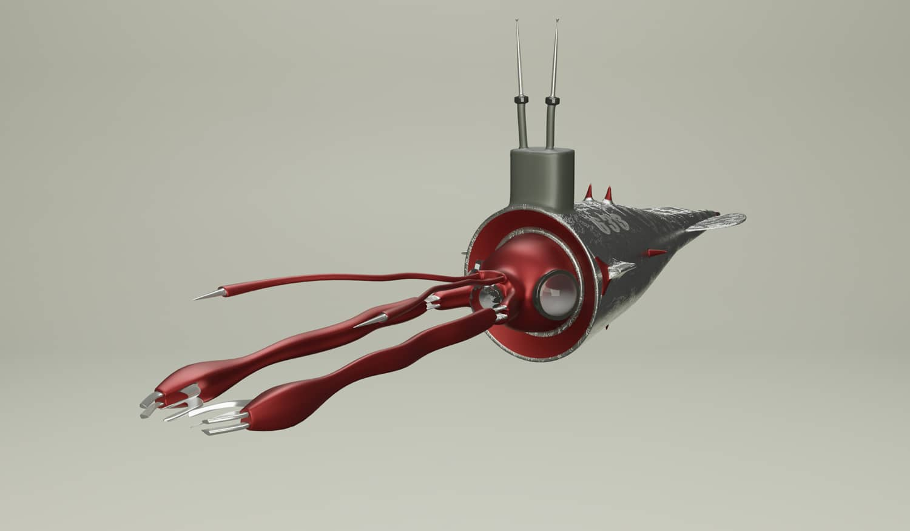
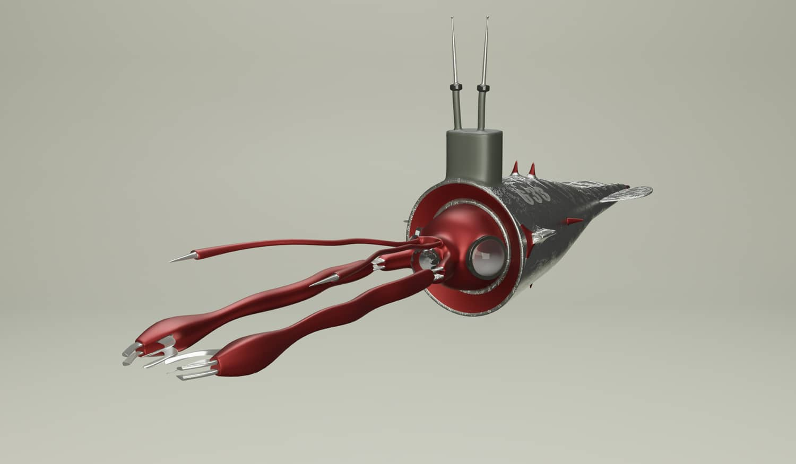

Mining Spaceship

Type
Personal, class project
Tools
Blender
Timeline
2 weeks, February 21 - 27, 2023
Personal, class project
Blender
2 weeks, February 21 - 27, 2023
This mining spaceship model was inspired by the shape of a giant squid. While brainstorming for the project,
I browsed an article about a rare giant squid that was found dead on a beach in South Africa. I thought that the
functionality of a squid’s body like its flexible tentacles and streamlined torpedo shape would translate well to
an environment in space that requires mobility and precise control.
This was built from scratch by coming up with the idea, sketching, modeling, texturing, and exporting the model to use in different platforms.


 
